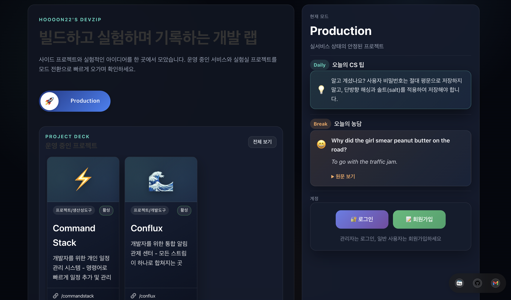

핵심 역량
풀스택 개발 경험
프론트엔드(React, Next.js)부터 백엔드(Spring Boot, Node.js), 데이터베이스(MySQL)까지 전 영역을 경험했습니다. 서비스 전체를 이해하고 협업할 수 있습니다.
AWS 클라우드 인프라
EC2, RDS, S3, Route53 등을 활용해 직접 서비스를 배포하고 운영했습니다. 비용 최적화와 서버 관리 경험을 보유하고 있습니다.
문제 해결 중심 개발
실제 사용자의 불편함을 발견하고 해결하는 것을 좋아합니다. DevZip, 퐁당 등 직접 기획하고 운영하는 서비스를 통해 이를 실천하고 있습니다.
대표 프로젝트
운영 중 
DevZip - 개발 프로젝트 플랫폼
2024.01 ~ 현재 (개인 프로젝트)
다양한 실험적 아이디어와 실서비스를 한곳에 모아놓은 개인 개발 플랫폼입니다. 실시간 채팅, 방명록, 트렌드 분석 등 다양한 기능을 직접 구현하고 운영하고 있습니다.
이 프로젝트를 통해 ...
기획 → 개발 → 배포 → 운영까지 전 과정을 혼자 수행하며,
실제 서비스를 만들고 유지하는 역량을 갖추었습니다.
Next.js React Node.js MySQL AWS

그 외 프로젝트

GameAdvisor
2025 (개발중)게임 화면을 실시간 분석하여 최적의 전략을 제안하는 데스크톱 애플리케이션
Spring Boot JavaFX OpenCV


GitHub Summary Extension
2024OpenAI API를 활용해 GitHub 레포지토리를 자동 요약하는 Chrome Extension
JavaScript OpenAI API
기술 스택
💻 Backend
Java Spring Boot Node.js
🎨 Frontend
React Next.js JavaScript
🗃️ Database
MySQL
☁️ Infra
AWS Linux Git
학력 및 경험
동국대학교 컴퓨터공학과
2018.03 ~ 2023.02 졸업
전공 교과목을 통해 자료구조, 알고리즘, 운영체제, 데이터베이스 등 CS 기초를 탄탄히 다졌습니다.
인간-로봇 상호작용 연구실
2019.07 ~ 2021.04 학부연구생
시각/청각 장애인을 위한 접근성 연구에 참여하며, 사회적 가치를 담은 기술 개발을 경험했습니다.